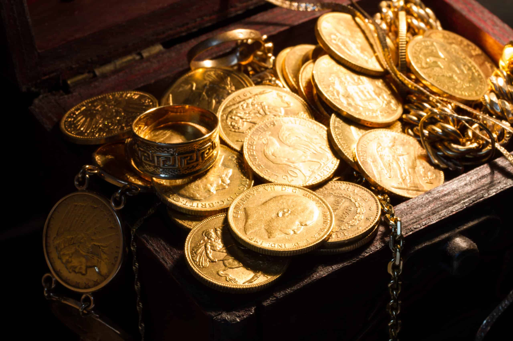

- Don't overlook church records in your research
- Pastor and church names are breadcrumbs to follow
- Church locations tell your family's migration story
- Start with free resources, then expand
- Every small clue counts toward solving the puzzle
